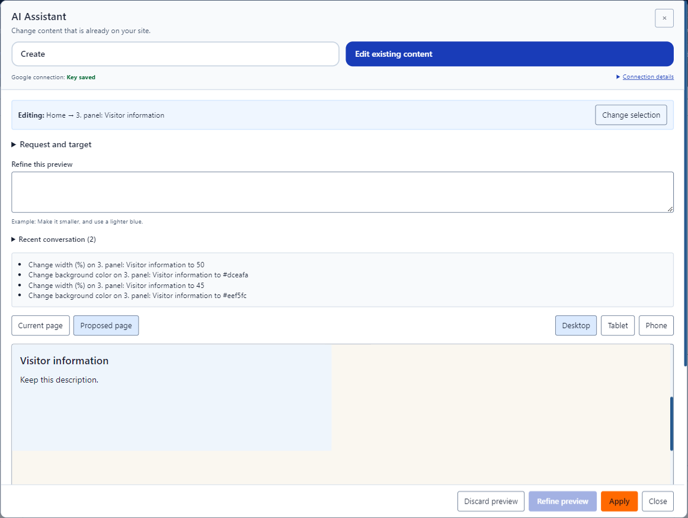
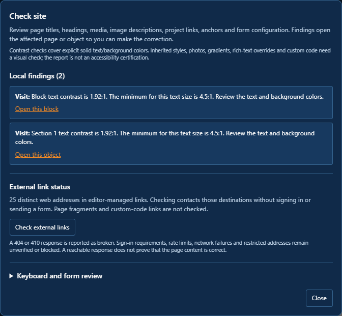

Calendars
Maintain events through the editing controls and let visitors browse months and their scheduled activities.
Features
Bring your pages, photographs and regular updates into one visual workspace. Shape the visitor experience, keep the editable project and take your finished website files with you.
Make the page your own
Place text, images, buttons and panels on the canvas, then use columns, alignment guides and layers to give the content a clear structure. A visible Move control lets you reposition a text box while keeping its wording intact.
 Explore the editing tools
Explore the editing tools View the Media library
View the Media libraryA home for your content
Arrange photographs, videos and documents in logical media folders, browse them by thumbnail and select what belongs on the page. Media management has its own workspace, separate from choosing a file for an individual image.
Responsive galleries retain photographs' proportions. Reorder them by dragging or assigning position numbers, then let visitors enlarge a photograph and read its caption beside the image.
Ready for regular website work
Give a church, community organization or small business the pages it needs without building every interaction from scratch.
Maintain events through the editing controls and let visitors browse months and their scheduled activities.
Build a staff directory with editable portraits and text. Longer biographies open separately, keeping the cards comfortable to scan.
Bring announcements, galleries, articles and bulletin PDFs into the site, with links that help visitors reach the detail they need.
Present the address and contact details alongside a form. Form delivery needs a configured HTTPS form service or the supported visitor email-draft flow.
Optional help from Google Gemini
The optional assistant uses Google Gemini, Google's online AI service. Ask it to improve selected wording, create an editable page or section, or propose changes to existing components.
Read the proposal before applying it. Where supported, add follow-up directions to refine the result; accepted content remains editable, and Undo gives you a way back.
The connection uses an API key—a secret credential you create in Google AI Studio—and an eligible Free-tier Google project with billing disabled. Internet access is required. Google controls eligibility, quotas, availability and data-use terms; the app cannot verify billing status and has no paid-model fallback.
Read the AI walkthrough in the User Guide
View a proposal reviewWelcome more visitors
TAtlas website translation adds a floating language selector powered by GTranslate, an online translation service. Enable it for the website export, and visitors get browser-language detection plus a selector for choosing another language.
This translates visitor-facing website pages. The editor interface and the original project wording remain unchanged, and the website owner does not configure a language list.
Translation needs JavaScript and an internet connection. It is machine-generated, so visitors can return to the original language. Text inside photographs and scanned PDF pages is not translated by the webpage selector.
The provider's service terms and privacy policy apply. The guides explain how to enable the option, try it in a local website review and remove it through a new export.
About the translation service
View Check siteReview, then take it with you
Save a portable project with its media for future editing. Export independent HTML pages with their CSS, JavaScript and assets, ready for compatible static web hosting.
Check site reviews supported descriptions, headings, navigation and explicit text/background contrast. Optional external-link checks help identify reachable or missing destinations; guided steps support manual keyboard, form and mobile review.
Refresh a permanent local test folder and try the generated site in your browser. A verified ZIP protects affected existing files before refresh. When you're ready to upload, optional SFTP uses the Windows OpenSSH Client and the connection details supplied by your host.
Automated findings support your review; they are not a complete accessibility or security certification. Contact forms and other external services retain their own setup requirements.
Make the next update easier
Choose the Windows edition for your computer and keep the illustrated guides beside you as you explore.